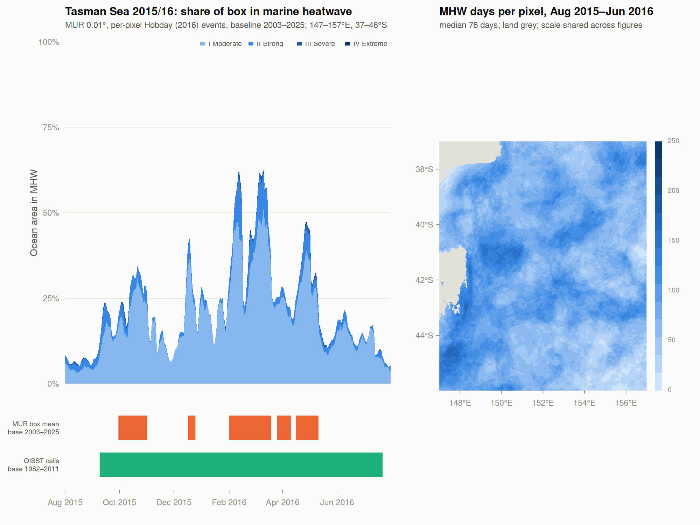

How daily satellite pixels become the statistically-ready cell sums everything on this site is computed from.
Every product is summarized onto the same discrete global grid: S2 cells at level 5. The S2 library projects the sphere onto the six faces of a cube and subdivides each face recursively; at level 5 there are 6 × 45 = 6,144 cells worldwide, each about 83,000 km2 (roughly 290 km across). Of those, 5,451 touch ocean in GHRSST MUR and 4,867 in OISST (the products differ at coasts and ice). The cells nest exactly inside their parents, every cell has a compact sortable token for an id, and a region of any shape is just a set of cells — which is why the Explorer treats regionalization as selection, and why the cube-net view there shows the grid's native geometry.
The daily fields are never warped, resampled, or interpolated. Each source pixel is assigned, whole, to the one cell that contains its centre — a dense positional mapping from pixel index to cell id, computed once per grid and stored beside the sums (a grid stamp guards against ever applying a mapping to the wrong grid). A level-5 cell contains on the order of 70,000–100,000 MUR pixels (0.01°) or about 100–170 OISST pixels (0.25°); both sources land in the same cells, at their own native resolution.
The same principle carries to polygons: if your workflow needs to rasterize regions against a native grid, see controlledburn, which computes exact polygon coverage as sparse cell runs without materializing a mask, and its natural partner in Rust, rwarp, for the cases where data genuinely must move between grids.
For each cell, each day, the accumulation keeps four numbers over the contributing ocean pixels: the pixel count n, the summed area weight sumw (each pixel weighted by its spherical area, so high-latitude pixels count for what they cover, not for how many they are), and the weighted sums sumwx and sumwx2 of the value and its square. One Parquet file per date; a failed date writes nothing and is simply re-run.
The algebra that makes the store "statistically ready":
mean = sumwx / sumw
variance = sumwx2 / sumw - mean^2
and the sums are mergeable: the statistics of any union of cells, days, or both come from adding the rows first and taking the ratio once. No averaging of averages, no reweighting step, no loss of exactness. A regional daily series, a monthly cell mean, a 23-year trend input — all are the same operation at different groupings.
This is why the Explorer can compute the series for any hand-picked set of cells instantly in your browser: it holds monthly sumw-weighted means per cell and combines them by the identity above. And it is why "add a region" is a one-line change — a region is a cell list, not a new computation.
The design has deep prior art. NASA ocean colour has stored exactly these accumulations — weighted sums and sums of squares per equal-area bin — since SeaWiFS in 1997, in the L3bin format's integerized sinusoidal rows (a proto-DGGS: each latitude row holds just as many bins as it needs). trend.sst swaps the ragged rows for a hierarchical cell index and HDF for Parquet on object storage, but the statistical contract is the same one that scheme proved decades ago. NASA's own explainer of the scheme was lost in a site migration; a restored copy lives with the hypertidy/L3bin package, which also implements the scheme in R.
| tier | what | where | size |
|---|---|---|---|
| pixels | daily COGs / netCDF, full resolution | source.coop, NOAA | TBs |
| sums | per-date Parquet of (cell, n, sumw, sumwx, sumwx2) | projects.pawsey.org.au/aad-derived/trend-sst | GBs |
| site data | baked series, per-cell metrics, monthly means | docs/data/ on this site | MBs |
Each tier is derived from the one above and can be rebuilt from it; nothing on this site is hand-maintained. Anything you see here can be reproduced against the sums directly — select cells in the Explorer and use Get the data for ready R / SQL / Python snippets, including the bulk-sync route for intensive work. The Mechanics page watches the gap between the tiers (what the bucket holds vs what this site was baked from), and the trailing ~10 days of GHRSST / ~14 of OISST are provisional pending upstream finalization.
Summaries at cell level are exact in a way masked or warped pipelines are not: every source pixel is counted once, with its own area, in its own cell, and the stored sums determine the mean and variance of any cell union to floating-point precision. What is approximated is the region boundary itself — a "Pacific" built from 290 km cells has a 290 km-grained edge. That trade is deliberate: boundary-exact masks are a per-region, per-grid recomputation; cell sums are computed once and answer every region after the fact. For boundary-sensitive work the pixel tier remains upstream, untouched.
A marine heatwave (Hobday et al. 2016) is a run of five or more days above the 90th percentile of the local seasonal climatology, built from an 11-day window around each day of the year over a baseline period, with gaps of two days or fewer joined. The mean climatology is linear and falls straight out of the sums. The percentile does not: quantiles are not mergeable, so the sums cannot produce a heatwave threshold for a union of cells, and the heatwaves of a union are not the union of the cells' heatwaves. Two tiers follow from that.
Cell or region means: a selection's daily series (exact, from the sums) run through the standard method. Cheap, any region, any source, but the averaging damps the extremes.
Pixel deep dives: a regional window of GHRSST MUR at native 0.01° (about a million pixels, the full 2002– record), transposed into a time-chunked store so every pixel gets its own climatology, threshold and events. The Heatwaves page shows these.
The per-pixel engine is a vectorised reimplementation of the heatwaveR defaults (Schlegel & Smit 2018). The day-of-year window indices are the same for every pixel, so a 50×50-pixel chunk shares them and the climatology becomes matrix column operations. It is checked against heatwaveR itself: on each region's box mean and 40 random pixels the climatology, threshold and every event day match exactly. A second check costs nothing: the climatology is linear, so the area-weighted mean of the pixel anomalies must equal the box-mean anomaly, and does, to 0.0001 °C (heatwaveR's rounding). Event days are then summed into the same kind of additive daily totals as everything else: weighted area in a heatwave, by category (Hobday et al. 2018).
The baseline is the result, not a detail. MUR begins in 2002, so it cannot use the conventional 1982–2011 climatology, and trend.sst does not mix products to fake one. MUR runs on its own 2003–2025 baseline, with OISST on 1982–2011 shown alongside as the classic reference. In the Tasman Sea, OISST on 1982–2011 sees 2015/16 as a single event (2015-09-09 to 2016-07-22, 318 days, peak +2.99 °C). Kajtar et al. (2021) give the same dates and duration for a near-identical box (147–157°E, 37–46°S, baseline 1983–2012; peak 2.8 °C). Oliver et al. (2017), averaging over a narrower box (147–155°E, 37–45°S), have it start on the same day but end on 2016-05-16 (251 days, 2.9 °C). The region is part of the answer, as well as the baseline. On 2003–2025, both products split the same period into 6–8 shorter events, because the later baseline already contains the warm years after 2016 and so sets a higher threshold. MUR heatwaves here are heatwaves relative to recent climate.

What averaging hides. In the 2015/16 Tasman event the median pixel's peak anomaly was +3.3 °C, against +1.9 °C for the box-averaged series, so about 40% of the intensity disappears in the mean. The difference also runs the other way. Averaging lowers the variance and so the threshold, so broad mild warming can put the box mean in a heatwave while few individual pixels are (Tasman 2014: 96 box-mean days against 40 for the average pixel). Western Australia 2010/11 (Pearce & Feng 2013) is the second check: up to 85% of the box in heatwave conditions, the box-mean event peaking on 2011-03-02, OISST's on 2011-02-28, and the most heatwave days along the coast.
Campbell, J.W., Blaisdell, J.M. and Darzi, M. (1995). Level-3 SeaWiFS Data Products: Spatial and Temporal Binning Algorithms. NASA Technical Memorandum 104566, Vol. 32 (SeaWiFS Prelaunch Technical Report Series), NASA Goddard Space Flight Center. PDF — the operational prior art: weighted sums and sums of squares accumulated per equal-area bin, as run for every NASA ocean colour mission since SeaWiFS.
Chan, T.F., Golub, G.H. and LeVeque, R.J. (1983). Algorithms for computing the sample variance: analysis and recommendations. The American Statistician 37(3), 242–247 — the numerical analysis of exactly the merge used here: combining sums and sums of squares across partitions of the data.
Fisher, R.A. (1922). On the mathematical foundations of theoretical statistics. Philosophical Transactions of the Royal Society A 222, 309–368 — where "sufficient statistic" gets its name and its meaning: the stored sums carry everything the data had to say about the quantities reported.
Hobday, A.J. et al. (2016). A hierarchical approach to defining marine heatwaves. Progress in Oceanography 141, 227–238 — the definition used for the heatwave tier.
Hobday, A.J. et al. (2018). Categorizing and naming marine heatwaves. Oceanography 31(2), 162–173 — categories I–IV as multiples of the threshold's distance above the climatology.
Kajtar, J.B., Holbrook, N.J. and Hernaman, V. (2021). A catalogue of marine heatwave metrics and trends for the Australian region. Journal of Southern Hemisphere Earth Systems Science 71(3), 284–302 — regional case-study boxes; its Tasman Sea box (147–157°E, 37–46°S) is the closest published match to the region here.
Oliver, E.C.J. et al. (2017). The unprecedented 2015/16 Tasman Sea marine heatwave. Nature Communications 8, 16101 — the reference event for the Tasman region, over 147–155°E, 37–45°S.
Pearce, A.F. and Feng, M. (2013). The rise and fall of the “marine heat wave” off Western Australia during the summer of 2010/2011. Journal of Marine Systems 111–112, 139–156 — the reference event for the Western Australia region.
Schlegel, R.W. and Smit, A.J. (2018). heatwaveR: a central algorithm for the detection of heatwaves and cold-spells. Journal of Open Source Software 3(27), 821 — the implementation reproduced exactly here.
This work uses resources of the Pawsey Supercomputing Research Centre, with funding from the Australian Government and the Government of Western Australia: the backfills run on Pawsey systems and the authoritative sums are served from Pawsey object storage.